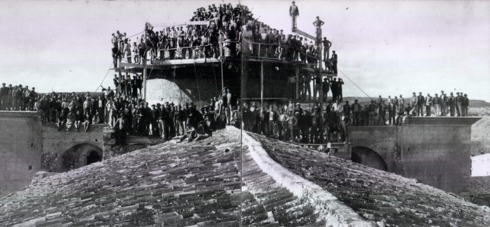

L'any 1935, el dia del 250è aniversari de la Reserva, començaren les obres d'ampliació del temple que donaren lloc a l'actual. S'hi afegiren l’absis i el creuer amb una cúpula central i quatre cúpules més petites, i es feren les obertures de la nau per als vitralls. La longitud final del temple arribà als actuals 50 m; la cúpula central s'alça fins als 28 m sobre el trespol. Les obres a la nau acabaren l'any 1941, però les cúpules petites no s'acabaren d'enllestir fins al 1974. El projecte va ser de l'arquitecte Guillem Muntaner i Vanrell.
Les obres es desenvoluparen en unes circumstàncies especialment difícils, entre la Segona República i la Guerra Civil, i només s'interromperen temporalment durant els dies del desembarcament republicà del capità Bayo a Mallorca, l'any 1936. Malgrat això, l'ampliació es dugué a terme gràcies a la participació voluntària de gran part dels veïns de Vilafranca, que la convertiren en una autèntica obra col·lectiva del poble.
L'any 1942 s'instal·là sobre la cúpula del creuer l'escultura del Sagrat Cor de Jesús que caracteritza la silueta actual del temple. Va ser obra de l’escultor Miquel Vadell, ajudat pel mestre d'obres local Joan Bauzà Font. Fa 6 m d'alçada, comptant la peanya, i és de ciment portland armat. Poc després s'amplià el retaule del presbiteri, que quedava petit a l'absis nou, afegint-li un cos més a cada costat. L'autor de l'ampliació del retaule va ser l'escultor Bartomeu Amorós. L'altar major nou es va estrenar per la festa de la Reserva del 1947.